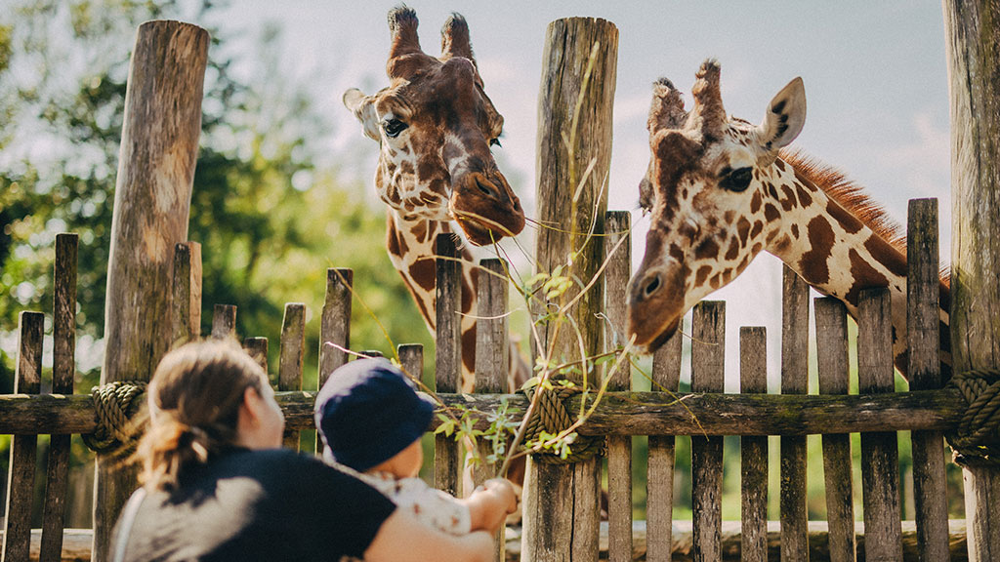
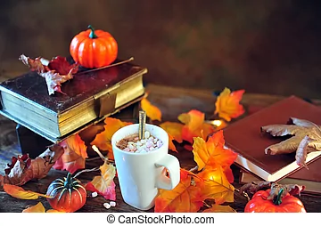
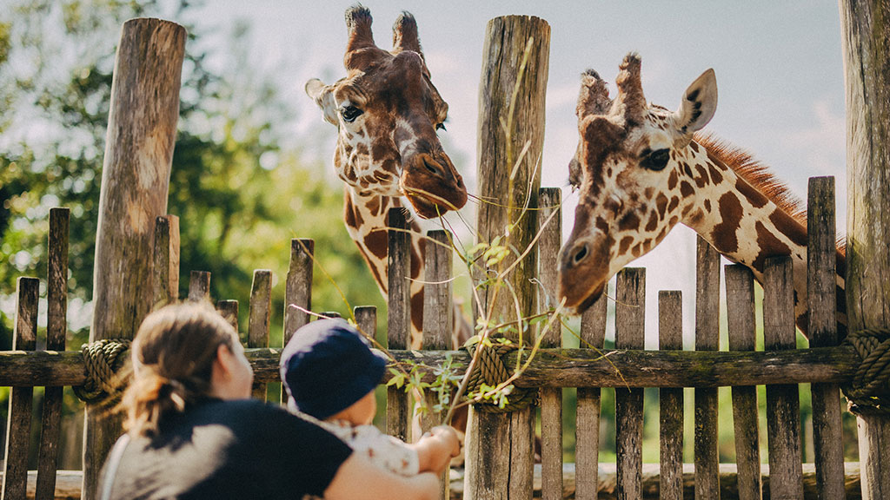
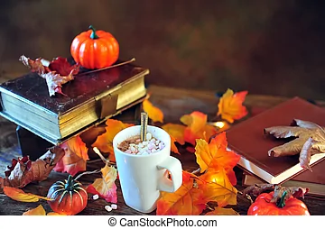

ShutterCraft Studios is a professional photography studio specializing in a wide range of photography services. Founded by a team of passionate photographers in 2010, the studio offers creative and high-quality photography for various occasions and purposes. ShutterCraft Studios is a prime example of a photography business that combines creativity, technical expertise, and client-focused services to capture and preserve memories and create stunning visual content for various purposes.
Key Features:
- Portrait Photography: ShutterCraft Studios excels in portrait photography, capturing moments and emotions in family portraits, engagement sessions, and individual portraits. They work closely with clients to create personalized and meaningful images.
- Event Photography: The studio provides event photography services for weddings, corporate events, and special occasions. Their photographers are skilled in capturing candid moments, ensuring that clients have lasting memories of their important events.
- Post-Processing and Editing: ShutterCraft Studios offers post-processing and editing services to enhance and retouch images, ensuring they meet the highest quality standards.
- Online Galleries and Print Services: Clients have access to online galleries for easy viewing and sharing of their photos. The studio also offers high-quality print services, including photo albums and wall art.


 


